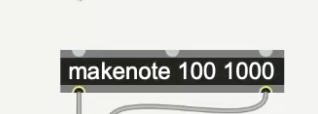
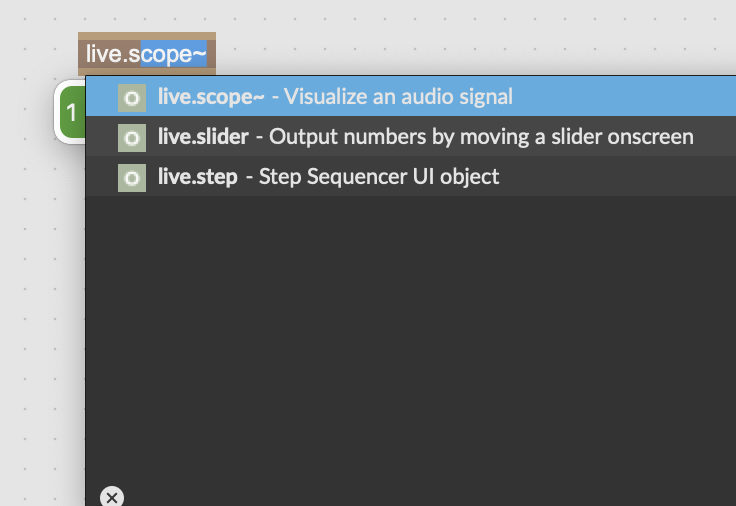

Max简介:
Eg: Metro 500 意义为每个拍子之间间隔500ms,即半秒

后者数字表示音符时长duration,单位1000ms,即1s,前者数字表示音符速度velocity
Flonum (float number)快捷键f 输出带小数的正负浮点数据
sinusoidal窦状隙；窦状小管；正弦曲线；正弦曲线的
通常cycle~后接的是你想发送的正弦波的频率数比如440(就是
oscillator振荡器做的事)
灰色连接线连接的通常不是音频数据,但是黄灰色间断的连线连接的是音频数据audio data

可视化音频信号将midi从max发送到另一个程序:
1.打开reaper菜单栏track里的insert virtual instrument on new track会弹出一个plugin窗口,里面会有一些安装好的效果器插件
选择后即创建好轨道且插入已选的效果器
2.将max 的midi data输入到reaper里,打开reaper的preferences,找到audio下的MIDI devices,主要关注input, from Max 1和from Max 2右侧默认显示的是disabled,但是需要双击将其勾选后,右侧会显示enabled + control ,点ok
3.在Max里将noteout的信息块按住cmd+双击勾选输出到from Max 1,即可以连接到reaper的插件下
Midi多轨道从max发送到reaper